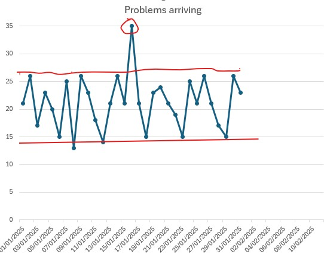

The Trap of Tampering
You see a spike in your data. Your gut says, “Fix it.” But what if that “fix” is the very thing that makes your data noise worse?
The Detective’s Verdict
Most teams fall into the Tampering Trap, treating every blip as an emergency. But look at the evidence below:

The Analysis: That circled spot at 35 looks like a crisis. You might know why it happened—perhaps a delivery driver was ill—but that doesn’t mean you should change your system. By plotting the spots, you see that the system returned to its normal range the very next day. You saved your team from a month of unnecessary “fixes” that would have only added chaos to a healthy process.
Don’t launch a systemic investigation for a single spike. If it happens once, annotate your chart and keep watching. Only when an event occurs at least three times do you have evidence of a recurring weakness. That is when you should investigate and consider action.
Don’t launch a systemic investigation for a single spike. If you are monitoring a blood test for a high-risk medication and see a high reading, do not immediately lower the dose. Instead, test the patient again in three days. If it is still high, you have evidence of a recurring issue. Only then should you consider adjusting the medication after talking with the patient.
When to do nothing
If your data is bouncing within its natural limits, doing nothing is not laziness—it’s strategy. You are protecting the system from unnecessary, chaotic intervention.
When to act
Only act when the pattern itself breaks. If the rhythm remains the same, your “intervention” will likely cause more harm than good.
How to tell the difference: Just Plot the Spots
- Is it a blip? If it’s just one day, leave it alone. That’s just daily noise.
- Is it a pattern? Plot the spots to see the full picture. If you see a consistent, repeating shift in the rhythm that lasts for weeks, that’s your signal to investigate.
Not sure if what you're looking at is real? Upload your CSV to the StepChange Analyzer — it will tell you immediately whether a genuine change has occurred. Try the Analyzer →
Prefer to read the method first? The Western Electric Rules give you the same protocol on paper — the standard patterns that separate routine noise from a system that actually needs attention. Learn the Western Electric Rules →
Still worried about a specific blip?
Upload your CSV to the Analyzer. We’ll show you if your system is just breathing, or if it’s actually choking.
Plot my spots now📚 Show the full statistical case — Deming, Joiner, and the Western Electric Rules — click to expand
☰ Contents — click to expand
- The rigorous version — four questions
- What tampering is
- Common cause and special cause variation
- Deming’s funnel experiment
- Joiner’s worked example — warfarin and INR
- Impatience — the second form of tampering
- The political cycle as a tampering machine
- How Bootstrap CUSUM prevents tampering
- Tampering in practice — worked examples
- The Western Electric Rules (WECO) — when it is right to act
📝 The rigorous version — four questions
The Three-Strike Rule above is the plain-language version of this test. Here’s the statistical version, for anyone who wants to check the working:
1. Is this result outside the natural process limits? Apply an X-mR control chart or Bootstrap CUSUM to the historical series. Does this result fall outside the upper or lower natural process limit? If no: it is common cause variation. Rule 1. Leave it alone.
2. Has the process structurally changed? Has Bootstrap CUSUM detected a new stage — a permanent shift in the process mean — coinciding with or immediately before this result? If no: the process is behaving normally. Any result within the natural limits is expected.
3. If I am about to act — can I identify the specific cause? Special cause variation has a specific, assignable cause. If you cannot name the specific thing that changed to produce this result, there is no specific cause to act on. Acting without a specific identified cause is tampering by definition.
4. Is the intervention being considered within the expected lag window? If a structural intervention was implemented less than [expected lag] periods ago, the absence of a Bootstrap CUSUM change point is not evidence of failure. It is the expected state. The correct action is to continue the intervention and monitor — not to replace it.
“If you can’t describe what you are doing as a process, you don’t know what you’re doing.” — W. Edwards Deming
What tampering is
The definition contains the key distinction: the same action — adjusting a process — is correct management when applied to special cause variation, and tampering when applied to common cause variation. What makes it tampering is not the action itself. It is the misidentification of the source of variation.
Deming demonstrated this with a physical experiment. He demonstrated it mathematically. And Brian Joiner, in Fourth Generation Management (Chapter 8, “The Price of Ignorance,” page 128), uses anticoagulation management — warfarin dosing in response to INR readings — as his worked example. Not because anticoagulation is an unusual case. Because it is the clearest possible illustration of a universal problem.
Common cause and special cause variation
Every process produces variation. The critical question is: what is the source of that variation? Deming, following Shewhart, identified two fundamentally different sources.
Normal system noise
Variation inherent to the system as designed. Predictable, stable, and expected. Produced by the hundreds of small factors that are part of how the process works — none of them large enough to identify individually.
Cannot be reduced by reacting to individual results. Can only be reduced by changing the system itself.
A specific, assignable signal
Variation from a specific, identifiable cause that is not part of normal system operation. Unpredictable. Represents something genuinely different happening. Detectable with statistical tools as a point outside the natural process limits.
Should be investigated and addressed specifically.
The management error that produces tampering is confusing the two. A result comes in that looks bad. The natural response is to act — to adjust, correct, intervene. If the result reflects a special cause, that action is appropriate. If it reflects common cause variation — normal system noise — the action makes things worse. The system was not doing anything unusual. The intervention introduces a new disturbance on top of the natural variation.
Failing to act on a special cause allows one specific problem to persist. Acting on common cause variation — tampering — adds new variation to a system that was already behaving normally. Tampering systematically increases the spread of outcomes over time. The more frequently a manager tampers, the worse the process performs. This is Deming’s central point: it is not that intervention is wrong. It is that intervention applied to the wrong type of variation is actively harmful — and more intervention of the wrong type produces more harm.
Deming’s funnel experiment
Deming demonstrated tampering physically with a funnel, a marble, and a target on a table. The marble is dropped through the funnel repeatedly. The goal is to hit the target. Four rules are tested:
🎯 The Funnel Experiment — Four Rules
Each rule describes how the funnel position is adjusted after each drop, based on where the marble landed. The experiment demonstrates what happens to the spread of outcomes under each rule.
Leave the funnel fixed over the target. Make no adjustments regardless of where each marble lands.
After each drop, move the funnel by the distance the marble missed the target, in the opposite direction. Compensate for each miss.
After each drop, move the funnel to be directly over where the marble landed, then aim for the target from there.
After each drop, move the funnel to exactly where the marble landed. Each outcome sets the new starting point.
Rules 2, 3, and 4 are all forms of tampering. Each produces a worse outcome than Rule 1, which is simply to leave the system alone. The experiment makes the mathematical fact visceral: acting on common cause variation always increases spread.
Rules 3 and 4 have direct organisational equivalents. Rule 3 is a manager who “corrects” each outcome by adjusting the process to the last result — chasing noise. Rule 4 is an organisation that uses the last outcome as the new target — copying the last period’s performance as the new standard. Both produce progressive deterioration.
Joiner’s worked example — warfarin and INR
Brian Joiner, in Fourth Generation Management (Chapter 8: “The Price of Ignorance,” page 128), uses anticoagulation management as his worked example of tampering. The choice is precise: it is a clinical setting where the consequences of both tampering and under-responding are potentially fatal, which makes the stakes visible in a way that abstract examples cannot.
Warfarin is an anticoagulant with a narrow therapeutic range. For most indications, the target International Normalised Ratio (INR) is 2.0 to 3.0. Below 2.0, the patient is under-anticoagulated — at increased risk of clot. Above 3.0 (and especially above 4.0), the patient is over-anticoagulated — at increased risk of bleeding. Achieving the right INR for each patient requires regular monitoring and periodic dose adjustment.
The clinical challenge is distinguishing when an INR reading requires a dose adjustment from when it is simply common cause variation around the patient’s natural therapeutic level.
Joiner’s Common Cause Highway and Special Cause Highway — INR time series. Blue points: common cause variation within the highway, do not adjust. Orange points: Rule 2 signal, investigate. Red point: Rule 1 breach, act. Source: Joiner, Fourth Generation Management, Chapter 8, p.128.
The natural INR variation for a patient on a stable warfarin dose will fluctuate around their individual therapeutic level. Diet, illness, other medications, and activity all produce day-to-day variation. Most of this variation is common cause — it is the expected noise of the system. A reading of 2.3 one week and 2.7 the next does not indicate that the dose needs changing. It indicates the system is working normally.
A patient on warfarin has a stable INR around 2.5 — well within the 2.0–3.0 range. One week the reading is 2.8. The clinician, seeing it has risen, reduces the dose slightly. The next reading is 2.1. The clinician, seeing it has fallen, increases the dose. The next reading is 2.9. The clinician reduces the dose again. Each adjustment is a rational response to the last reading. Each adjustment is tampering — acting on common cause variation. The actual effect is to introduce dose variation on top of the natural INR variation, increasing the amplitude of fluctuation. Over time, the INR becomes less stable, not more — and the risk of both clotting and bleeding events increases.
Joiner’s point in Chapter 8 is precise: the patient would have better outcomes if the dose had never been changed. The variation was common cause. The correct response was Rule 1: leave the process alone.
The special cause equivalent is different and important. If a patient’s INR suddenly rises to 4.5 after years of stability at 2.5, that is a special cause signal. Something specific has changed — a new medication interaction, a change in diet, a minor illness. This warrants investigation and a specific response. The distinction between the two cases is not intuitive from looking at a single reading. It requires a statistical framework for distinguishing common cause from special cause variation — which is precisely what Bootstrap CUSUM and the X-mR control chart provide.
At the population level, the anticoagulation safety article on this site applies Bootstrap CUSUM to NHS adverse event data across the transition from warfarin to direct oral anticoagulants (DOACs). The analysis finds three structural change points: an initial rise in adverse events as DOACs arrived before renal contraindications were fully understood; a doubling of prescription volumes following NICE mandate; and a structural fall in DOAC adverse event rates following the EMA renal dosing label update. The warfarin residual population — those who remain on warfarin rather than switching to DOACs — is now a smaller, more carefully managed group. Bootstrap CUSUM on the residual warfarin adverse event rate shows the structural shift. What Joiner identified at the individual patient level — the cost of tampering with INR readings within the natural process limits — is now visible in aggregate as the difference between well-managed and poorly-managed anticoagulation systems.
Impatience — the second form of tampering
The funnel experiment addresses tampering in response to individual results. There is a second, equally destructive form: tampering in response to the lag between an intervention and its measurable effect. This is impatience — and it operates on a longer time scale than the funnel experiment, but with equally predictable consequences.
Every structural intervention takes time to produce a measurable result. The lag depends on the mechanism:
| Intervention type | Mechanism | Expected lag to Bootstrap CUSUM change point |
|---|---|---|
| Economic price signal | Acts through market immediately; operators respond within months | 1–2 years (carbon price floor: change point at 2013, policy from April 2013) |
| Clinical protocol rollout | Acts through training, compliance, and cohort turnover | 3–5 years (time for intervention to reach sufficient scale and patient cohorts to turn over) |
| Workforce development | Acts through training pipeline; new staff enter practice years after training begins | 7–10 years (a decision to expand Old Age Psychiatry training produces consultants 7–10 years later) |
| Infrastructure investment | Acts through capital build, commissioning, and capacity ramp-up | 5–8 years (memory clinic capacity: planning, build, recruitment, operational ramp) |
| Fleet / technology transition | Acts through replacement cycle as old stock retires | 10–15 years (EV transition: 35 million vehicles replacing at ~2.5 million per year) |
Impatience is applying the logic of tampering to this lag: seeing that the outcome measure has not yet moved, concluding the intervention has failed, and introducing a new intervention before the first one has had time to work. Each new intervention resets the lag clock. The system never receives the sustained, stable conditions it needs to produce a measurable result. Each iteration is recorded as a policy failure. The actual failure is the confusion between the expected lag and evidence of failure.
⏰ The tampering clock reset
“Constancy of purpose toward improvement of product and service.” — Deming’s First Point, Out of the Crisis
Deming’s First Point is constancy of purpose — not because steadiness is a virtue in itself, but because structural change requires time, and time requires sustained commitment. The political pressure to act — to be seen to be responding — produces the opposite of constancy. Each new government, each new leadership team, each new review cycle introduces a new intervention. Each introduction is a tampering event. The lag clock resets. Nothing is ever given long enough to work.
The dementia diagnosis story is the clearest example. The PM’s Challenge ran from 2012 to 2015. The diagnosis rate reached the 66.7% target in November 2015. When COVID collapsed the rate in 2021, the response was a series of short-term initiatives rather than addressing the structural constraint — memory clinic capacity — that determined whether the rate could be sustained. Five years later the rate is still below the target. Not because the interventions were wrong. Because each was applied and removed before the system had time to respond to the previous one. See the dementia analysis for the full Bootstrap CUSUM picture.
The political cycle as a tampering machine
The four-year electoral cycle produces tampering almost automatically. A structural intervention with a 7–10 year lag will show no measurable result within a parliamentary term. The government that made the decision will not receive the credit for the outcome. The next government inherits the system without the context. The intervention is cancelled, replaced, or redirected. The lag clock resets.
This is not a failure of individual politicians. It is a system design problem — exactly what Deming would predict. The incentive structure of the political system rewards visible short-term action over invisible long-term effectiveness. Layer 3 interventions (changing parameters, adjusting incentives) produce visible activity within weeks. Layer 1 system redesign produces measurable results in years. The political system reliably selects for tampering.
When a system has been subjected to repeated tampering — successive interventions each applied before the previous one had time to work — Bootstrap CUSUM produces a characteristic flat line. Not because nothing changed. Because the changes cancelled each other out. The NHS A&E data shows this precisely: 15 years, more than 20 policy interventions, and Bootstrap CUSUM at 99.7% confidence finds four structural stages of decline and not one upward change point. The interventions are not invisible in the data because they had no effect. They are invisible because each was reversed or superseded before a structural change could consolidate. See the A&E analysis.
How Bootstrap CUSUM prevents tampering
Bootstrap CUSUM is the statistical tool that makes the tampering distinction objective. It answers precisely the question that tampering arises from: has the process structurally changed, or is this variation I am looking at simply common cause noise?
A Bootstrap CUSUM change point at 95% or 99.7% confidence is a statistically defensible signal that something genuinely changed — that a structural shift occurred, that the process mean permanently moved. The absence of a change point, in a series with adequate data, is equally informative: the process has not structurally changed, and any variation being observed is common cause noise. Responding to it is tampering.
Pre-specifying a Bootstrap CUSUM change point as the test of whether an intervention worked removes the subjective element that enables tampering. If the change point does not appear within the expected lag window, the correct conclusion is not “the intervention failed” — it is “the evidence is not yet sufficient to declare success or failure.” That is a different conclusion, and it leads to a different action: maintain the intervention, monitor, and apply Bootstrap CUSUM again in the next period. Tampering would be: the outcome measure has not moved within two years, therefore the intervention failed, therefore we will replace it with a new one. Bootstrap CUSUM replaces that subjective judgement with a pre-committed statistical test. The data either crosses the threshold or it does not. If it does not, the intervention continues. The clock is not reset.
Used prospectively as the Study step of PDSA, Bootstrap CUSUM is the operational implementation of Deming’s distinction between common cause and special cause variation — applied to the question of whether an improvement programme is working.
Applied to the warfarin INR case: an X-mR control chart on a patient’s INR time series defines the natural process limits for that individual patient. Readings within those limits are common cause variation — Rule 1, leave alone. Readings outside those limits, or a Bootstrap CUSUM change point in the series, are special cause signals warranting investigation and a specific response. The statistical tool does the work that clinical judgement alone cannot reliably do: it distinguishes signal from noise.
Tampering in practice — worked examples
| Setting | The variation observed | The tampering response | What Bootstrap CUSUM shows |
|---|---|---|---|
| Anticoagulation — warfarin INR | INR reading of 2.8 when the patient’s natural level is 2.5 — common cause fluctuation | Dose reduced. Next reading 2.1. Dose increased. Oscillation introduced on top of natural variation. | No change point in the INR series — common cause variation throughout. Dose changes added variation. Anticoag analysis. |
| A&E performance — NHS | Four-hour performance dips in December — seasonal, predictable, common cause | New winter plan introduced. New targets set. New reporting requirements. Each intervention overlaps the last. | One stage of structural decline across 15 years. No upward change point from any intervention. A&E analysis. |
| Dementia diagnosis — EDDR | Monthly EDDR fluctuates within natural process limits around 65–67% | Monthly performance meetings, GP-level targets, incentive adjustments in response to individual months below the mean. | One stage, mean 65.39%, N=9 annual observations. Common cause variation around a stable mean. Dementia analysis. |
| Sales performance — any organisation | Monthly sales figure down 8% from last month — within historical variation | Urgent review meeting. Sales team restructured. New commission structure introduced. Training programme mandated. | If no Bootstrap CUSUM change point in the sales series, the 8% fall was common cause. All interventions are tampering and add cost without changing the trend. |
| Transport emissions — UK policy | Year-on-year transport emissions fluctuate within ±5% depending on economic activity | New fuel duty rates, new vehicle standards, new emission zones introduced in response to individual years of rising emissions. | No structural change point at 95% confidence across 34 years. Policy interventions are acting on common cause variation within an unchanged system. Carbon analysis. |
The Western Electric Rules — when it is right to act
Knowing that tampering means acting on common cause variation is necessary but not sufficient. The practical question is: how do you know, in the moment, whether what you are looking at is common cause noise or a genuine signal? This is where the Western Electric Company Rules — WECO rules, also called control chart detection rules — provide the operational answer.
The WECO rules were developed by engineers at the Western Electric Company and published in the Statistical Quality Control Handbook (1956). They divide a control chart into three zones on each side of the mean, based on standard deviations, and define specific patterns that cross the threshold from common cause variation into statistically significant signals warranting investigation.
The three zones
+3σ
+2σ
+1σ
Mean
−1σ
−2σ
−3σ
The four core WECO rules
Each rule defines a specific pattern that constitutes a statistically significant signal — a result that is unlikely to arise by chance in a stable process and therefore warrants investigation. Crucially, these rules define precisely when it is right to act. Acting outside these rules — responding to results that do not trigger any rule — is tampering.
A single point outside the upper or lower control limit (beyond 3 standard deviations from the mean). The most obvious signal. Probability of occurring by chance in a stable process: approximately 1 in 370. Always warrants investigation.
Two of the last three consecutive points fall in Zone B or beyond (more than 2 standard deviations from the mean), on the same side. Probability approximately 1 in 89. The process is drifting. A shift may be occurring even though no single point has broken the control limit.
Four of the last five consecutive points fall beyond Zone C (more than 1 standard deviation from the mean), on the same side. Probability approximately 1 in 32. A subtle but consistent shift — the process is running off-centre even though individual points look unremarkable.
Eight or more consecutive points all above or all below the centre line (the mean), without necessarily reaching Zone B or A. Probability approximately 1 in 256. The process has shifted to a new mean even though the individual points appear within limits. This is the rule most likely to detect a genuine step-change.
A patient’s INR series has a stable mean of 2.5 with a standard deviation of 0.2. The control limits are therefore approximately 1.9 (lower, −3σ) and 3.1 (upper, +3σ). Zone B limits are 2.1 and 2.9. Zone C limits are 2.3 and 2.7.
Common cause — do not adjust: A reading of 2.8 (Zone C upper) after several readings around 2.5. One point in Zone C on one side is entirely expected. Adjusting the dose in response is tampering.
Rule 2 signal — investigate: Readings of 2.8, 2.5, 2.9 on consecutive weeks. Two of the last three are in Zone B or beyond. Something may be changing — a new food interaction, a missed dose, a minor illness. Investigate before adjusting.
Rule 1 signal — act: A reading of 3.4 (above the upper control limit). This is a Zone A signal. A specific cause is likely. Investigate immediately — this is the appropriate response to special cause variation, not tampering.
The rules make the boundary between tampering and appropriate action precise rather than judgement-dependent. A clinician who adjusts warfarin only when a WECO rule fires is acting on evidence. A clinician who adjusts in response to any reading above 2.7 is tampering — even if the intent is correct.
The WECO rules and Bootstrap CUSUM answer related but different questions. The WECO rules ask: does any individual reading or short pattern constitute a signal right now? Bootstrap CUSUM asks: has the underlying process mean permanently shifted? For a patient’s INR series, the WECO rules detect acute events (a new drug interaction, a missed dose) that may require an immediate response. Bootstrap CUSUM detects whether the patient’s long-run therapeutic level has genuinely moved to a new mean — which would warrant a permanent dose recalibration rather than a temporary adjustment.
Neither tool alone is sufficient. WECO rules without Bootstrap CUSUM will miss a gradual drift that never produces a dramatic single reading. Bootstrap CUSUM without WECO rules will miss an acute event that resolves before it produces a change point. Together they cover both the short-run signal detection and the long-run structural change question.
Well-designed anticoagulation management software applies the WECO rules automatically, flagging signals when Rules 1, 2, or 3 fire. When a signal fires, the software highlights it and raises the question — it does not prescribe the action. This is the correct design. The decision to adjust a warfarin dose belongs to the clinician who knows the full context: what else changed recently, whether the patient has a new prescription, whether a procedure was performed, whether the reading is consistent with a reported dietary change. The software removes the statistical ambiguity — it tells the clinician whether the variation crosses a threshold that is unlikely to be common cause noise. It does not replace the clinical judgement about what to do next.
This distinction matters precisely because of tampering. Software that recommends a dose adjustment on every WECO signal would itself be a tampering machine — it would prompt adjustments on patterns that are statistically unusual but clinically explicable. Software that presents the signal and waits for the clinician to evaluate it preserves the judgement layer that Deming argued was essential. The Western Electric Rules define the threshold for raising the question. They do not define the answer. The clinician who adjusts a dose without a WECO signal firing is tampering. The clinician who adjusts without investigating the cause of a genuine signal is reacting without understanding. Both are management failures. The rules delineate the space between them.
The clinical safety of this design principle has been validated. Multi-centred randomised controlled trials, developed with expert physicians, have demonstrated that WECO-rule-based anticoagulation management software — where the software flags and the clinician decides — is both safe and clinically effective. The RCT evidence is the answer to the question that Deming’s framework raises but cannot answer on its own: not just whether the design principle is theoretically correct, but whether it produces better patient outcomes in practice. It does.
📚 Source: Western Electric Company. Statistical Quality Control Handbook. 1956. The four rules described above are the core detection tests. Additional rules exist (such as 15 consecutive points in Zone C, or 8 points with none in Zone C) but the four described are the most widely used and most relevant to the tampering concept. See also: Montgomery, D.C. Introduction to Statistical Quality Control. Wiley, 2009.
Related concepts and articles
This concept sits within a broader framework for understanding why improvement programmes succeed or fail. Start with Why Nothing Changes for the full picture, or go to Start Here for a guided introduction to the method.